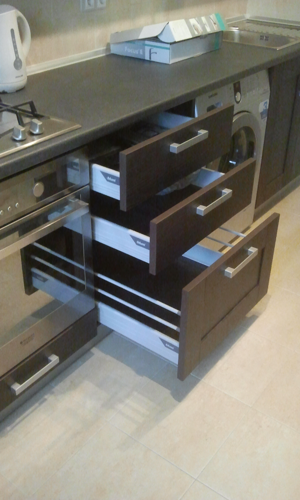
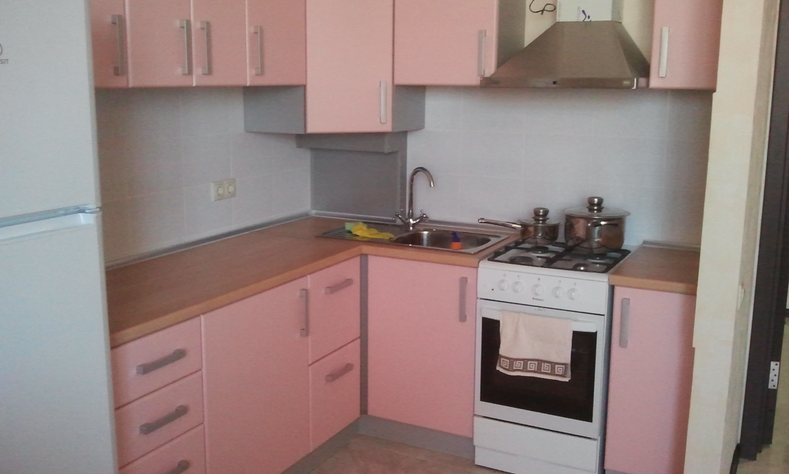
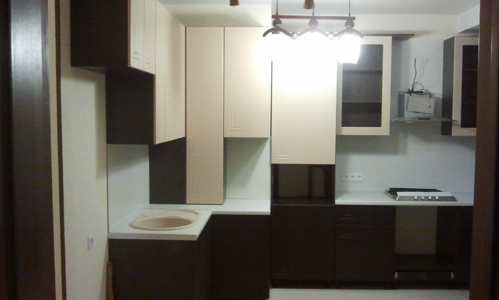
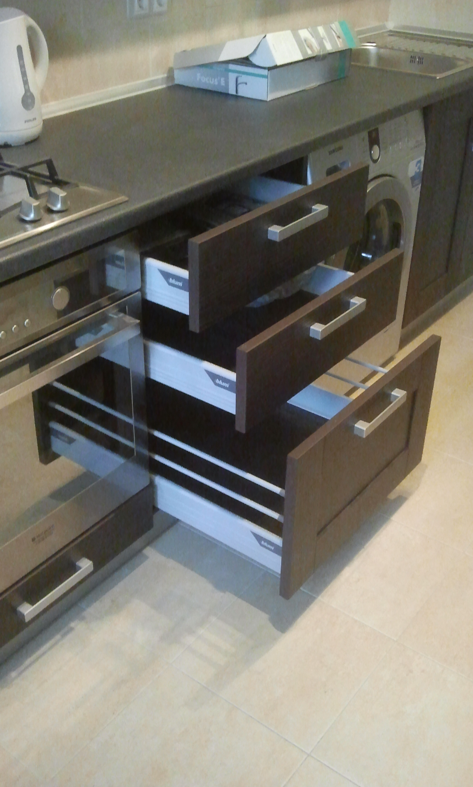
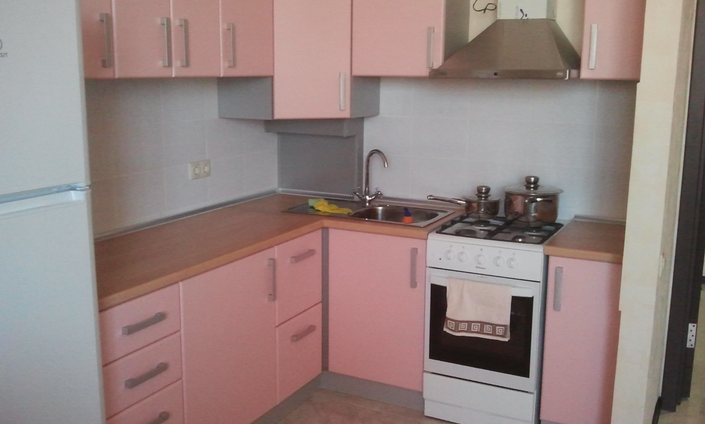
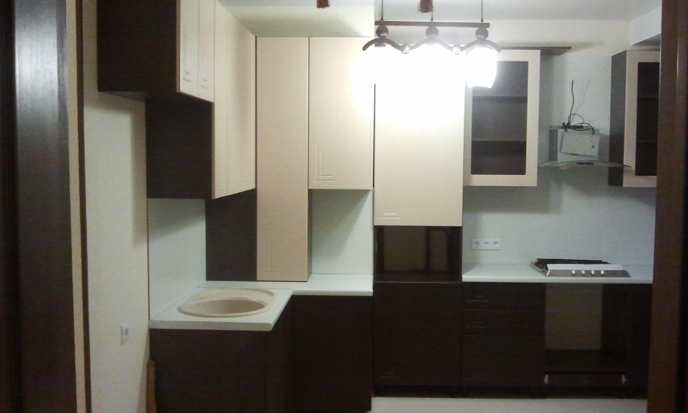
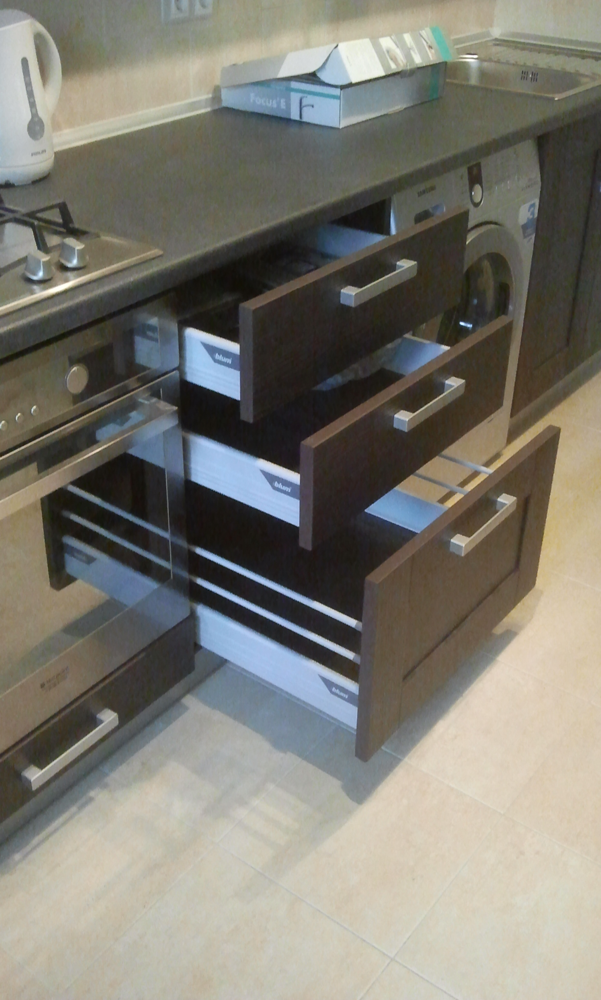
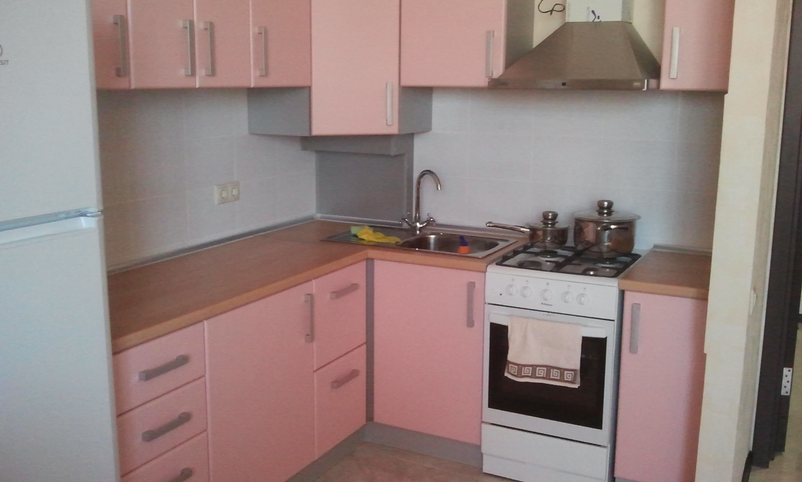
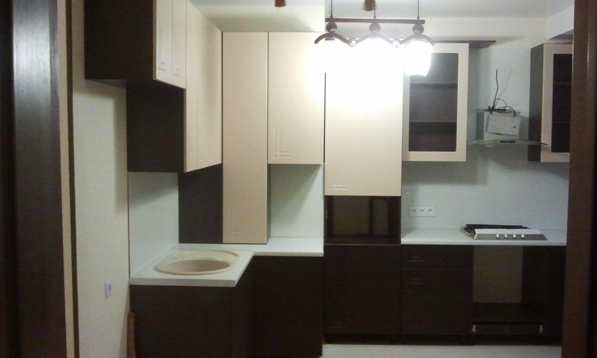
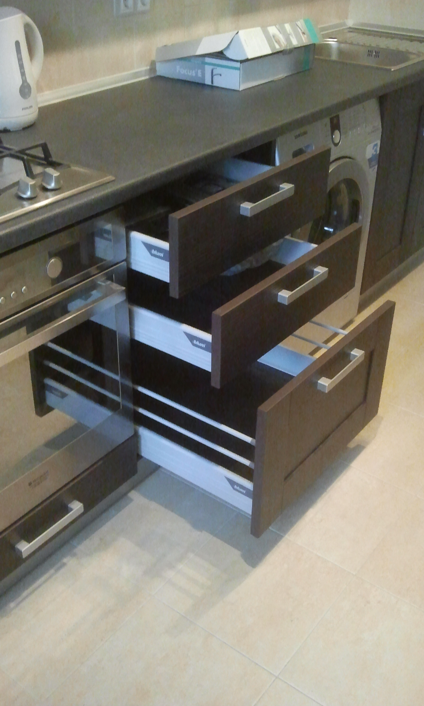
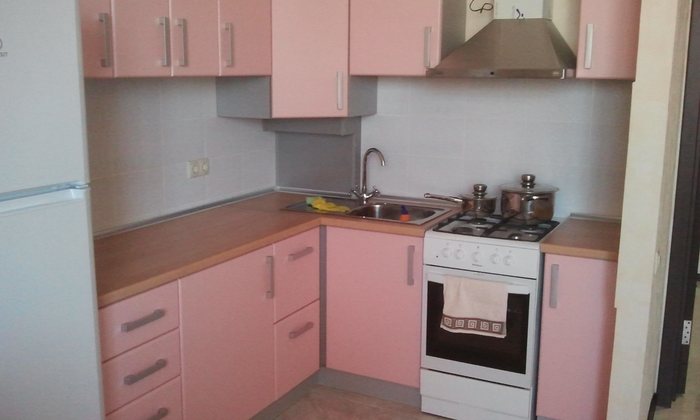
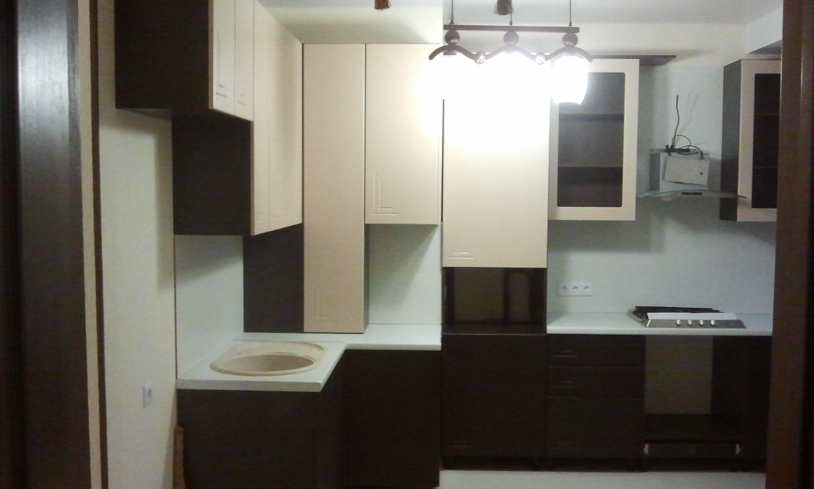
Фирма Эльбрус Мебель предлагает разные услуги. Основное направление работы — изготовление мебели под заказ. Каждому бизнесмену (будь то производственное предприятие или сфера услуг) хочется найти хорошего поставщика и быть уверенным, что не будет сбоев в работе. Работая с юрлицами и предпринимателями и осознавая высокую степень ответственности при таком партнерстве, фирма Эльбрус Мебель стремится делать свою работу профессионально и вовремя, так как их привлекает возможность долгосрочного сотрудничества. Обратитесь к сотрудникам фирмы Эльбрус Мебель, чтобы узнать необходимую информацию по предлагаемым товарам или услугам.
Обратный звонок
Купе в классическом стиле Славятся классические шкафы и тем, что способны создать теплую, расслабляющую атмосферу. Спокойные оттенки вкупе с благородными материалами зрительно увеличат комнату, сделают ее светлее и просторнее. Огромный ассортимент вариантов отделки включает в себя не только установку зеркал или декор фасада, но и декор карнизов и боковых стоек. При необходимости классический шкаф-купе может даже стать незаметным для глаз окружающих. Например, встроенные модели, подходящие по цвету к обстановке комнаты, будут и вместительными, и скрытыми.
Обратный звонок
Купе в классическом стиле Славятся классические шкафы и тем, что способны создать теплую, расслабляющую атмосферу. Спокойные оттенки вкупе с благородными материалами зрительно увеличат комнату, сделают ее светлее и просторнее. Огромный ассортимент вариантов отделки включает в себя не только установку зеркал или декор фасада, но и декор карнизов и боковых стоек. При необходимости классический шкаф-купе может даже стать незаметным для глаз окружающих. Например, встроенные модели, подходящие по цвету к обстановке комнаты, будут и вместительными, и скрытыми.
Купе в классическом стиле Славятся классические шкафы и тем, что способны создать теплую, расслабляющую атмосферу. Спокойные оттенки вкупе с благородными материалами зрительно увеличат комнату, сделают ее светлее и просторнее. Огромный ассортимент вариантов отделки включает в себя не только установку зеркал или декор фасада, но и декор карнизов и боковых стоек. При необходимости классический шкаф-купе может даже стать незаметным для глаз окружающих. Например, встроенные модели, подходящие по цвету к обстановке комнаты, будут и вместительными, и скрытыми.
Купе в классическом стиле Славятся классические шкафы и тем, что способны создать теплую, расслабляющую атмосферу. Спокойные оттенки вкупе с благородными материалами зрительно увеличат комнату, сделают ее светлее и просторнее. Огромный ассортимент вариантов отделки включает в себя не только установку зеркал или декор фасада, но и декор карнизов и боковых стоек. При необходимости классический шкаф-купе может даже стать незаметным для глаз окружающих. Например, встроенные модели, подходящие по цвету к обстановке комнаты, будут и вместительными, и скрытыми.
Купе в классическом стиле Славятся классические шкафы и тем, что способны создать теплую, расслабляющую атмосферу. Спокойные оттенки вкупе с благородными материалами зрительно увеличат комнату, сделают ее светлее и просторнее. Огромный ассортимент вариантов отделки включает в себя не только установку зеркал или декор фасада, но и декор карнизов и боковых стоек. При необходимости классический шкаф-купе может даже стать незаметным для глаз окружающих. Например, встроенные модели, подходящие по цвету к обстановке комнаты, будут и вместительными, и скрытыми.
Оставьте заявку или свяжитесь с нами по почте el.sohiev@mail.ru или телефону +7-928-233-15-17
Выезд мастера - Бесплатно!
Выезд мастера - Бесплатно!
Бесплатно!
Расчет по номеру +7-928-233-15-17
Бесплатно!
Быстро и качественно!
Вы нам дороги!
Желаете заказать прямо сейчас?
пн: 09:00–18:00 вт: 09:00–18:00 ср: 09:00–18:00 чт: 09:00–18:00 пт: 09:00–17:00 сб: 09:00–16:00 вс: Закрыто